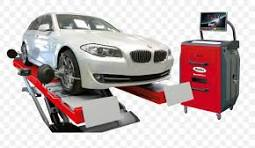

Precision wheel alignment for better handling, steering and tyre life.
Accurate wheel alignment helps maintain vehicle stability, steering control and even tyre wear. Our 3D wheel alignment service is designed to inspect and adjust your vehicle's wheel alignment as required.

Our 3D alignment system helps identify alignment deviations and provides before-and-after readings for the vehicle.
Our technicians inspect the applicable wheel alignment parameters and related tyre and steering conditions.
Correct wheel alignment can help your vehicle maintain proper handling and reduce unnecessary tyre wear.
Wheel alignment should be checked if your vehicle pulls to one side, the steering wheel is not centred while driving straight, or your tyres show uneven or abnormal wear.
It is also advisable to check alignment after hitting potholes or kerbs, after fitting new tyres, or following steering and suspension related work.
Regular inspection can help identify alignment-related issues before they result in excessive or uneven tyre wear.
Professional 3D wheel alignment service at a straightforward price.
For all types of vehicles
The current wheel alignment price is ₹799 for all types of vehicles.
Price is subject to change based on prevailing market conditions. Please confirm the current price with Jai 3D Wheeltech before service.
Additional repairs or replacement of damaged steering, suspension, tyres or other vehicle components, if required, may be charged separately.
Visit Jai 3D Wheeltech for professional 3D wheel alignment service.
📍 Beside Bus Depot, Banswada
📞
+91 99482 05203